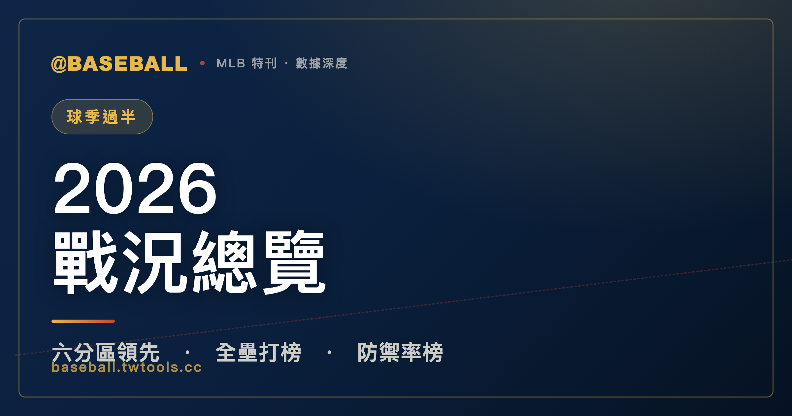

2026 大聯盟球季過半總覽：道奇稱霸全聯盟、白襪意外領跑、分區戰況全盤點
2026 球季過半，道奇 52 勝 29 敗、得失分淨值 +144，是全大聯盟贏最多、也最具統治力的一支球隊。釀酒人以 49 勝 29 敗（淨值 +123）緊追其後，是全聯盟兩支淨值過百的球隊之一。六大分區各有故事：美聯東區洋基以 +113 淨值一騎絕塵，白襪意外在中區爭冠圈撐住，勇士主宰國聯東區，釀酒人在中區建立七場勝差護城河，道奇在西區將第二名甩開九場。全壘打榜舒瓦伯領跑 29 轟，防禦率榜米西歐羅斯基 1.45 ERA 登頂，打點王尼克・科茲（Nick Kurtz）61 分打點堪稱攻擊引擎。排名與數字仍在滾動，賽季尚未結束。

MLB 特刊｜2026 球季過半總覽
球季走到 2026 年 6 月 25 日，各隊大約打了接近 80 場比賽，站上球季的中間點往兩端望：前半段已經給出了足夠多的線索，後半段的勝負還沒有寫定。這正是「過半總覽」最適合出現的時機——不是宣告誰奪冠，而是把現況鋪出來，讓看數字的球迷自己判斷。
截至 2026-06-25，全大聯盟最醒目的一條故事線只有一個開頭：洛杉磯道奇（Los Angeles Dodgers）再次站在所有人前面。52 勝 29 敗、勝率 .642、得失分淨值（Run Differential，以下簡稱 RD）+144，這是六個分區裡沒有任何一支球隊能正面回答的數字。RD +144 意味著什麼？在一個打了 81 場左右的時間點，平均每場比賽道奇都多贏對手約 1.8 分——這不是靠幾場大勝撐出來的虛數，是整個陣容在攻守兩端全面優勢的累積結果。
但道奇之外，這個球季還有幾條值得細讀的線：密爾瓦基釀酒人（Milwaukee Brewers）以 49 勝 29 敗、RD +123 成為全聯盟第二強隊，而且他們的勝率 .628 在六大分區裡是唯一一支高過 .62 的非道奇球隊；芝加哥白襪（Chicago White Sox）從上季的谷底翻身，以 .519 勝率意外踩上美聯中區第一的位置，是這個球季最難被劇本預測到的劇情；個人排行榜上，有幾個名字出現在不應該被忽視的位置——釀酒人的年輕先發米西歐羅斯基（Jacob Misiorowski）、費城費城人（Philadelphia Phillies）的砲手舒瓦伯（Kyle Schwarber）、還有運動家（Athletics）的新生代一壘手科茲（Nick Kurtz），他同時稱霸全壘打第十名與打點榜第一名，是這個球季最全面的攻擊機器之一。
這篇特刊分三段走完：先看美聯三個分區，再看國聯三個分區，最後把個人排行榜打開來逐條分析。數字全部來自 MLB StatsAPI 官方資料，統計截止日 2026-06-25，賽季還在進行中，排名每天都在動。
美聯篇：東區洋基獨大、中區白襪意外登頂、西區水手邊緣求存
美聯東區——洋基 RD +113 遠拋群雄
美聯東區向來是大聯盟競爭最激烈的分區之一，2026 年到目前為止，雖然前兩名都在勝率 .570 以上，但故事並不複雜：紐約洋基（New York Yankees）以 48 勝 31 敗（RD +113）跑出了清楚的領先距離，坦帕灣光芒（Tampa Bay Rays）排在 3 場勝差之後追趕，其餘三隊都已經掉落到 9 場勝差之外。
| 美聯東區 | 勝 | 敗 | 勝率 | 勝差 | RD |
|---|---|---|---|---|---|
| 紐約洋基 | 48 | 31 | .608 | — | +113 |
| 坦帕灣光芒 | 44 | 33 | .571 | 3.0 | +2 |
| 多倫多藍鳥 | 39 | 41 | .488 | 9.5 | -27 |
| 巴爾的摩金鶯 | 38 | 44 | .463 | 11.5 | -25 |
| 波士頓紅襪 | 32 | 46 | .410 | 15.5 | -7 |
看 RD 這欄，洋基的 +113 與第二名光芒的 +2 之間有一道巨大的斷層。光芒能靠 .571 勝率緊跟，但 RD 幾乎持平——這意味著他們的勝利主要靠緊繃的低分比賽撐出來，而不是靠攻守全面壓制對手。像這樣的球隊，長線維持勝率的難度通常高於 RD 紮實的球隊。洋基的 +113 則代表他們不只是「贏」，而是在攻守兩端都有系統性優勢。
多倫多藍鳥（Toronto Blue Jays）的 RD -27 與勝率 .488，意味著他們勝負五五波、但得分能力已經出現逆差，屬於打著「拿一天算一天」節奏的球隊；巴爾的摩金鶯（Baltimore Orioles）以 -25 的 RD 坐守第四，跌落前年的強隊身份不少；波士頓紅襪（Boston Red Sox）的數字最有趣——RD -7 代表他們的得失分其實幾乎持平，但 15 場勝差的慘況顯示他們在緊繃比賽裡的勝負運不佳，或是陣容深度在加時與後援環節出問題。
東區的分區賽名額目前看來幾乎是洋基的囊中物，真正的懸念是光芒能否撐住外卡競爭。
美聯中區——白襪與守護者勝率並列，故事比數字更複雜
美聯中區是這個球季最戲劇化的分區，沒有之一。
芝加哥白襪（Chicago White Sox）以 41 勝 38 敗（RD -3）踩上分區第一的位置——單看這個事實就已經是一個值得停下來想想的訊號。白襪過去幾年在重建週期裡積累了大量失敗，2025 賽季更是打出令人心碎的歷史級低潮，球迷群幾乎已經把「2026 年也是過渡期」視為默認前提。然而截至目前，他們以 .519 勝率站在中區第一，哪怕 RD 只有 -3（意即得失分幾乎打平），這個位置是真實存在的。
| 美聯中區 | 勝 | 敗 | 勝率 | 勝差 | RD |
|---|---|---|---|---|---|
| 芝加哥白襪 | 41 | 38 | .519 | — | -3 |
| 克里夫蘭守護者 | 42 | 39 | .519 | — | -8 |
| 明尼蘇達雙城 | 38 | 44 | .463 | 4.5 | -29 |
| 底特律老虎 | 34 | 46 | .425 | 7.5 | -6 |
| 堪薩斯皇家 | 34 | 47 | .420 | 8.0 | -38 |
注意到了嗎：白襪 41 勝 38 敗，克里夫蘭守護者（Cleveland Guardians）42 勝 39 敗——兩支球隊在數學上的勝率完全相同（.519），都排在第一名的位置，勝差欄並列「—」。用勝場數論，守護者多贏了一場；用勝率論，兩隊完全一樣。這是一個活生生的並列分區領先，分區名額的懸念在中區最高。
守護者的 RD -8 與白襪的 -3 意味著兩支球隊的得失分都略微偏負，這在現時並列領先的分區領跑球隊裡算是相對罕見的情況——通常 RD 為負的球隊很難長期維持正勝率。後半季如果這兩隊的攻守平衡沒有明顯改善，他們都可能面臨勝率往均值回歸的壓力。
明尼蘇達雙城（Minnesota Twins）的 RD -29 與 4.5 場勝差，加上後面老虎（Tigers）和皇家（Royals）都是 -6 到 -38 的逆差，顯示整個中區得分能力普遍不足。這給了白襪和守護者在一個「相對低競爭環境」裡喘息的空間，但也說明任何一支外部球隊只要找到攻擊節奏，隨時可能快速追上。
值得特別點出的是白襪的個人排行榜貢獻：全壘打榜上，柯爾森・蒙哥馬利（Colson Montgomery）與村上宗隆・（Munetaka Murakami）各以 20 轟並列第六名，是白襪這個球季意外抬頭的兩大攻擊引擎。能在隊伍整體 RD 略負的情況下保持正勝率，這兩名砲手的長打力絕對是功臣之一。村上宗隆是來自日本職棒的大型轟炸機，在美聯環境適應的速度似乎比外界預期更快。
美聯西區——水手僅靠 0.5 場領先，四隊擠在 2.5 場勝差內
美聯西區是全聯盟競爭格局最密集的一個分區，四支球隊擠在 2.5 場勝差之內，整個分區看起來像是一場還沒有確定誰先過終點線的競速。
| 美聯西區 | 勝 | 敗 | 勝率 | 勝差 | RD |
|---|---|---|---|---|---|
| 西雅圖水手 | 41 | 40 | .506 | — | +8 |
| 休士頓太空人 | 39 | 43 | .476 | 2.5 | -39 |
| 運動家 | 38 | 42 | .475 | 2.5 | -57 |
| 德州遊騎兵 | 38 | 42 | .475 | 2.5 | -14 |
| 洛杉磯天使 | 34 | 48 | .415 | 7.5 | -36 |
西雅圖水手（Seattle Mariners）以 41 勝 40 敗、RD +8 踩在分區第一的位置，但 .506 的勝率說明他們更接近五五波而不是真正的強隊。RD +8 是西區唯一一支正值的球隊，代表他們的得失分確實有優勢，但這個優勢相當微薄。
更戲劇的是第二到第四名：休士頓太空人（Houston Astros）、運動家（Athletics）、德州遊騎兵（Texas Rangers）全部並列 2.5 場勝差，三隊的勝率都在 .475 上下。但他們的 RD 差距卻截然不同——太空人 -39、運動家 -57、遊騎兵 -14，這三隊都在失分方面遠大於得分，卻都掙扎在 40% 出頭的勝率範圍裡勉強維生。
運動家的 RD -57 在這個分區裡最觸目驚心：他們的得失分逆差已經相當嚴重，但勝率仍能貼近 .475，代表陣容深度或許在緊繃比賽裡撐住了一些出乎意料的勝利。然而從純數學的角度看，RD -57 的球隊要在後半季持續維持這個勝率難度不小。
太空人的 -39 更令人側目，因為在過去幾年，這支球隊幾乎是美聯西區穩定的統治者。目前的負值 RD 顯示他們的攻守平衡出了問題，要拼後半季反攻，需要解決的不只是排名，還有根本的得失分結構。
天使（Los Angeles Angels）以 RD -36 坐守末位，7.5 場勝差與 .415 勝率，說明他們在這個分區的競爭已經基本出局。
國聯篇：勇士穩紮國聯東、釀酒人建立護城河、道奇在西區獨孤求敗
國聯東區——勇士以 RD +92 坐穩第一，但中段有追兵
國聯東區的結構比美聯各區明顯清晰：亞特蘭大勇士（Atlanta Braves）毫無疑問地站在第一，但下面的球隊比想象中靠近，是一個「領頭羊跑得快、但第二集團也沒有崩散」的分區格局。
| 國聯東區 | 勝 | 敗 | 勝率 | 勝差 | RD |
|---|---|---|---|---|---|
| 亞特蘭大勇士 | 48 | 31 | .608 | — | +92 |
| 費城費城人 | 44 | 36 | .550 | 4.5 | -1 |
| 邁阿密馬林魚 | 42 | 39 | .519 | 7.0 | +3 |
| 華盛頓國民 | 41 | 40 | .506 | 8.0 | +9 |
| 紐約大都會 | 34 | 46 | .425 | 14.5 | -46 |
勇士以 48 勝 31 敗（RD +92）領跑，這是整個國聯最紮實的第一名。+92 的 RD 雖然低於道奇的 +144，但在東區對比群雄，已經是質量領先。費城費城人（Philadelphia Phillies）以 4.5 場勝差追在後面，.550 的勝率是第二名裡算得上有競爭力的；但注意他們的 RD 只有 -1，幾乎打平——這說明費城人的勝率是靠緊繃比賽裡的執行力撐出來的，而不是靠明顯的攻守優勢。這種模式在長線維持難度更高。
第三名邁阿密馬林魚（Miami Marlins）的數字有趣：42 勝 39 敗、RD +3、勝率 .519。RD 正值代表他們的得失分有些微優勢，但相當微薄。更值得注意的是第四名華盛頓國民（Washington Nationals）：41 勝 40 敗、RD +9，這個正值 RD 幾乎比費城人和馬林魚都紮實，卻排在勝率更低的第四名。這組數字背後通常代表一件事：他們在緊繃比賽裡的勝負偏負，大贏的場次貢獻了不少 RD，但關鍵比賽拿不下來。
國民的另一條故事線在個人排行榜：詹姆斯・伍德（James Wood）以 20 支全壘打並列第六名，是一名球迷應該記住名字的年輕砲手；CJ 艾布拉姆斯（CJ Abrams）以 57 分打點排在打點榜第四名，是球隊攻擊核心的關鍵支柱。一支勝率剛過五成的球隊，卻在個人排行榜上貢獻多名重量級球員，某種程度說明了他們的攻擊火力其實不差，問題出在其他環節。
紐約大都會（New York Mets）的 RD -46 與 14.5 場勝差是東區最令人擔憂的數字，基本上已退出分區競爭圈，只剩下個人數據和未來重建方向的意義。
國聯中區——釀酒人 RD +123 稱霸，背後是全聯盟最低防禦率投手
如果道奇的統治讓你印象深刻，密爾瓦基釀酒人（Milwaukee Brewers）的 49 勝 29 敗、RD +123，在全大聯盟的六個分區裡是除了道奇之外最具壓制力的數字。他們不是靠分區競爭弱才坐上第一，而是靠真實的攻守全面優勢建立護城河。
| 國聯中區 | 勝 | 敗 | 勝率 | 勝差 | RD |
|---|---|---|---|---|---|
| 密爾瓦基釀酒人 | 49 | 29 | .628 | — | +123 |
| 聖路易紅雀 | 42 | 36 | .538 | 7.0 | -1 |
| 芝加哥小熊 | 43 | 37 | .538 | 7.0 | +36 |
| 匹茲堡海盜 | 40 | 40 | .500 | 10.0 | +23 |
| 辛辛那提紅人 | 37 | 42 | .468 | 12.5 | -50 |
釀酒人已在分區裡建立起清楚的七場勝差護城河，而且這個護城河還在他們 RD +123 的土地上繼續擴建中。第二、第三名是有趣的並列：聖路易紅雀（St. Louis Cardinals）43 場 .538、芝加哥小熊（Chicago Cubs）43 場 .538，勝率完全相同，同樣落後 7 場；但兩隊的 RD 差距很大——小熊 +36，紅雀 -1。這組數字讀法是：小熊的優勢在攻守實力上更為真實，紅雀則靠緊繃比賽維持勝率。
匹茲堡海盜（Pittsburgh Pirates）以 RD +23 踩在 .500，算是「數字比排名好看」的案例：他們的得失分實際上是中區第三好的，但 10 場勝差的位置說明緊繃比賽沒有充分換算成勝利。辛辛那提紅人（Cincinnati Reds）的 RD -50 是中區最嚴重的逆差，儘管如此，紅人個人排行榜上出現了全聯盟第四低的防禦率投手蔡斯・伯恩斯（Chase Burns）2.00 ERA，而且他同時以 9 勝排在勝投榜並列第二——投手個人出色，球隊整體還是承受得分方面的壓力，是紅人今年最矛盾的地方。
回到釀酒人：讓他們 RD +123 成立的最大功臣之一，是目前全大聯盟防禦率最低的先發投手傑各布・米西歐羅斯基（Jacob Misiorowski），ERA 1.45。這個數字將在個人排行榜段落詳細展開。
同時也值得點出的是釀酒人的勝投王：亞倫・亞什比（Aaron Ashby）以 10 勝高居全聯盟勝投榜第一名，是唯一一個進入雙位數勝投的投手，在球季過半的時間點就先拿到兩位數，節奏相當突出。
國聯西區——道奇以九場勝差獨走，後面的競爭才剛開始
如果說美聯西區是四隊擠在一起的競速，國聯西區就是一個截然相反的圖像：道奇跑在最前面，所有人都在很遠的地方看著他的背影。
| 國聯西區 | 勝 | 敗 | 勝率 | 勝差 | RD |
|---|---|---|---|---|---|
| 洛杉磯道奇 | 52 | 29 | .642 | — | +144 |
| 聖地牙哥教士 | 42 | 37 | .532 | 9.0 | -5 |
| 亞利桑那響尾蛇 | 41 | 39 | .513 | 10.5 | -20 |
| 舊金山巨人 | 33 | 46 | .418 | 18.0 | -51 |
| 科羅拉多落磯 | 32 | 49 | .395 | 20.0 | -90 |
道奇 RD +144，是全大聯盟六個分區所有球隊裡最高的數字。平均每場比賽多贏將近 1.8 分，在這個時間點是接近「結構性壓制」的等級。第二名聖地牙哥教士（San Diego Padres）已經落後 9 場，RD -5 代表得失分幾乎打平；亞利桑那響尾蛇（Arizona Diamondbacks）在 -20 的 RD 裡維持 .513 勝率，同樣是靠緊繃比賽撐。
第四、第五名的落磯（Colorado Rockies）和舊金山巨人（San Francisco Giants）分別落後 20 場和 18 場，RD 各是 -90 和 -51——這已是基本脫離競爭圈的位置。落磯的 -90 是全大聯盟各隊 RD 裡最慘烈的逆差，意味著平均每場比賽都在失血超過 1 分以上。
道奇的陣容深度在個人排行榜上的體現是：防禦率榜同時佔據第八名（山本由伸（Yoshinobu Yamamoto）2.65 ERA）與第十名（賈斯汀・羅布雷斯基（Justin Wrobleski）2.71 ERA），而且羅布雷斯基以 9 勝同時踩上勝投榜並列第二。這種在防禦率和勝投兩個維度都有投手登榜的球隊厚度，解釋了 +144 RD 是怎麼建立起來的。此外，道奇的安迪・佩吉斯（Andy Pages）以 58 分打點排在打點榜並列第二，是攻擊端的核心推進器之一。
個人排行榜：舒瓦伯領跑全壘打、米西歐羅斯基稱霸防禦率、科茲打點王
球隊戰績之外，個人排行榜是這個球季的另一條主線。以下從官方數據裡整理截至 2026-06-25 的幾張榜單，全部只依照 facts 裡的數字如實呈現，同名次並列就並列。
全壘打榜 Top 10
| 名次 | 球員 | 球隊 | 全壘打（HR） |
|---|---|---|---|
| 1 | 凱爾・舒瓦伯（Kyle Schwarber） | 費城費城人 | 29 |
| 2 | 約丹・艾瓦雷茲（Yordan Alvarez） | 休士頓太空人 | 25 |
| 2 | 拜倫・巴克斯頓（Byron Buxton） | 明尼蘇達雙城 | 25 |
| 4 | 班・萊斯（Ben Rice） | 紐約洋基 | 22 |
| 5 | 亨特・古德曼（Hunter Goodman） | 科羅拉多落磯 | 21 |
| 6 | 柯爾森・蒙哥馬利（Colson Montgomery） | 芝加哥白襪 | 20 |
| 6 | 村上宗隆（Munetaka Murakami） | 芝加哥白襪 | 20 |
| 6 | 麥特・奧爾森（Matt Olson） | 亞特蘭大勇士 | 20 |
| 6 | 詹姆斯・伍德（James Wood） | 華盛頓國民 | 20 |
| 10 | 尼克・科茲（Nick Kurtz） | 運動家 | 19 |
| 10 | 謝伊・蘭格里爾斯（Shea Langeliers） | 運動家 | 19 |
凱爾・舒瓦伯（Kyle Schwarber）以 29 轟高掛榜首，領先第二名整整 4 支。舒瓦伯是費城費城人的左外野砲手，在重要的打擊排行榜上多次出現他的名字——費城人整體戰績看起來靠緊繃比賽撐，但舒瓦伯的砲火確實是這支球隊最真實的攻擊引擎之一。
約丹・艾瓦雷茲（Yordan Alvarez）與拜倫・巴克斯頓（Byron Buxton）並列第二各有 25 轟，這組並列有趣：艾瓦雷茲是休士頓太空人的核心砲手，他的太空人目前在西區苦撐 .476；巴克斯頓是明尼蘇達雙城的中外野好手，而雙城整體戰績並不理想，RD -29 說明他們在得分以外的環節出了問題。
班・萊斯（Ben Rice）以 22 轟排在第四名，是洋基的年輕轟炸機，在洋基整體 RD +113 的背景下，他的全壘打產出是組成那個強大攻擊陣容的拼圖之一。
第六名是一個四人並列：白襪的蒙哥馬利與村上宗隆、勇士的麥特・奧爾森（Matt Olson）、國民的詹姆斯・伍德（James Wood），各以 20 轟共享第六名。值得注意的是，白襪兩名球員同時上榜，這對一支意外站上中區第一的球隊來說，是他們攻擊端「自力更生」最有力的佐證。運動家同時有兩名球員並列第十（尼克・科茲與謝伊・蘭格里爾斯（Shea Langeliers）各 19 轟），這也解釋了為什麼一支 RD -57 的球隊能在西區保持 .475 勝率——他們靠長打力量撐住緊繃比賽的勝利。
防禦率榜 Top 10
| 名次 | 球員 | 球隊 | ERA |
|---|---|---|---|
| 1 | 傑各布・米西歐羅斯基（Jacob Misiorowski） | 密爾瓦基釀酒人 | 1.45 |
| 2 | 卡姆・施利特勒（Cam Schlittler） | 紐約洋基 | 1.71 |
| 3 | 克里斯托弗・桑切斯（Cristopher Sánchez） | 費城費城人 | 1.80 |
| 4 | 蔡斯・伯恩斯（Chase Burns） | 辛辛那提紅人 | 2.00 |
| 5 | 克里斯・塞爾（Chris Sale） | 亞特蘭大勇士 | 2.14 |
| 6 | 愛德華多・羅德里格斯（Eduardo Rodriguez） | 亞利桑那響尾蛇 | 2.27 |
| 7 | 德魯・拉斯姆森（Drew Rasmussen） | 坦帕灣光芒 | 2.62 |
| 8 | 山本由伸（Yoshinobu Yamamoto） | 洛杉磯道奇 | 2.65 |
| 9 | 帕克・梅西克（Parker Messick） | 克里夫蘭守護者 | 2.67 |
| 10 | 賈斯汀・羅布雷斯基（Justin Wrobleski） | 洛杉磯道奇 | 2.71 |
傑各布・米西歐羅斯基（Jacob Misiorowski）以 1.45 ERA 稱霸全聯盟防禦率榜，是這個球季最值得追蹤的年輕投手名字之一。他效力的釀酒人本來就是全聯盟 RD 最高的球隊之一，而 1.45 的 ERA 代表在正常比賽裡，平均九局他只讓對手得到不到一分半，這對一名先發投手來說是菁英中的菁英等級。釀酒人能在中區建立七場護城河，他的投球表現是不可或缺的零件。
卡姆・施利特勒（Cam Schlittler）以 1.71 ERA 排在第二名，隸屬紐約洋基——加上洋基整體 RD +113，這代表美聯東區的洋基在攻守兩端同時有壓倒性的數字，施利特勒正是投手群的核心之一。克里斯托弗・桑切斯（Cristopher Sánchez）以 1.80 ERA 排在第三名，他是費城費城人的先發支柱，同時以 9 勝並列勝投榜第二——這是一個防禦率與勝投雙線上榜的投手，在費城人靠緊繃比賽維持戰績的大背景下，他的每一場出賽都具有關鍵意義。
蔡斯・伯恩斯（Chase Burns）的 2.00 ERA 排在第四，加上他的 9 勝並列勝投榜第二，讓他成為這個球季最讓人好奇的矛盾體：他效力的辛辛那提紅人 RD -50，整體攻守皆弱，但他個人的投球數字幾乎可以在任何一支強隊的輪值排到前段。若後半季交易截止日前有大動作，伯恩斯是一個觀察球隊補強意向的重要指標人物。
克里斯・塞爾（Chris Sale）以 2.14 ERA 在勇士陣中排在第五名，他的存在讓勇士的投手陣容更加厚實，也是 RD +92 背後的守備撐柱之一。愛德華多・羅德里格斯（Eduardo Rodriguez）2.27 ERA 排在第六，效力亞利桑那響尾蛇，是一支整體數字不那麼出色的球隊裡個人表現最亮眼的投手。
防禦率榜的後半段出現了道奇的兩位先發：山本由伸的 2.65 ERA 排第八，羅布雷斯基的 2.71 ERA 排第十，這種一支球隊能在防禦率 Top 10 裡同時佔兩席的厚度，也是道奇 +144 RD 的核心原因。山本由伸的名字是台灣球迷非常熟悉的——這位前日本職棒的王牌，在道奇繼續展示自己在大聯盟適應後的投球質量。
帕克・梅西克（Parker Messick）以 2.67 ERA 排在第九名，是守護者（Cleveland Guardians）的先發，在中區白襪與守護者的並列競爭中，梅西克的投球穩定度是守護者能夠在分區維持競爭力的重要保障。
打點榜 Top 5
| 名次 | 球員 | 球隊 | 打點（RBI） |
|---|---|---|---|
| 1 | 尼克・科茲（Nick Kurtz） | 運動家 | 61 |
| 2 | 安迪・佩吉斯（Andy Pages） | 洛杉磯道奇 | 58 |
| 2 | 喬丹・沃克（Jordan Walker） | 聖路易紅雀 | 58 |
| 4 | CJ 艾布拉姆斯（CJ Abrams） | 華盛頓國民 | 57 |
| 4 | 艾利克・伯爾森（Alec Burleson） | 聖路易紅雀 | 57 |
尼克・科茲（Nick Kurtz）以 61 分打點高居打點榜第一，同時他在全壘打榜並列第十（19 轟），是一個攻擊端廣度與深度都站上頂線的球員。他效力的運動家是美聯西區的第三名，整體 RD -57，但科茲顯然在攻擊端撐起了不成比例的貢獻——這也是運動家能在糟糕 RD 裡勉強維持 .475 勝率最直接的解釋之一。對一名年輕球員來說，以 61 打點在球季過半位居聯盟第一，是一個相當引人矚目的前半段。
安迪・佩吉斯（Andy Pages）和喬丹・沃克（Jordan Walker）並列第二各有 58 打點：佩吉斯是道奇的攻擊核心之一，在道奇 RD +144 的體系裡，他的打點貢獻屬於強隊深厚陣容的一部分；沃克是聖路易紅雀的攻擊引擎，而紅雀整體 RD 僅 -1，意味著沃克 58 打點的輸出對球隊能夠勉強維持 .538 勝率至關重要。
CJ 艾布拉姆斯（CJ Abrams）與艾利克・伯爾森（Alec Burleson）並列第四，各有 57 打點：艾布拉姆斯是國民的年輕球星，他的存在與前面提到的詹姆斯・伍德一起，說明了國民這支球隊雖然在東區只排第四，但攻擊端的個人火力遠比戰績排名顯示的更有看頭；伯爾森是紅雀的另一名攻擊好手，和沃克的並列第二組合，讓紅雀成為打點榜貢獻最多人數的球隊之一。
勝投榜 Top 5
| 名次 | 球員 | 球隊 | 勝投（W） |
|---|---|---|---|
| 1 | 亞倫・亞什比（Aaron Ashby） | 密爾瓦基釀酒人 | 10 |
| 2 | 蔡斯・伯恩斯（Chase Burns） | 辛辛那提紅人 | 9 |
| 2 | 桑尼・格雷（Sonny Gray） | 波士頓紅襪 | 9 |
| 2 | 戴維斯・馬丁（Davis Martin） | 芝加哥白襪 | 9 |
| 2 | 安德烈・帕蘭特（Andre Pallante） | 聖路易紅雀 | 9 |
| 2 | 克里斯托弗・桑切斯（Cristopher Sánchez） | 費城費城人 | 9 |
| 2 | 蓋文・威廉斯（Gavin Williams） | 克里夫蘭守護者 | 9 |
| 2 | 賈斯汀・羅布雷斯基（Justin Wrobleski） | 洛杉磯道奇 | 9 |
亞倫・亞什比（Aaron Ashby）以 10 勝成為全大聯盟唯一進入雙位數勝投的投手，是釀酒人強大投手陣容的另一個佐證。亞什比與米西歐羅斯基的 1.45 ERA 搭配，讓釀酒人的輪值在這個球季幾乎是全大聯盟最難被攻克的投手群之一，這也直接解釋了 RD +123 是怎麼建立起來的。
第二名是七人大並列，全部以 9 勝共享排名，分屬七支不同球隊，展現了這個球季勝投榜的高度競爭與分散。其中值得特別點出的是波士頓紅襪的桑尼・格雷（Sonny Gray）9 勝——紅襪整體戰績在東區排名末段（32 勝 46 敗、RD -7），但格雷的 9 勝顯示他是一名在敗隊環境裡仍然能夠兌換勝利的投手，相當珍貴。芝加哥白襪的戴維斯・馬丁（Davis Martin）9 勝，則是白襪意外領跑中區另一個隱藏在後台的功臣——全壘打有蒙哥馬利和村上宗隆，投球有馬丁，這才是白襪站上第一的完整拼圖。
結語：現況如此，後半季自有答案
截至 2026-06-25，這是這個球季到目前為止所有數字整理出來的現況：
道奇 52 勝 29 敗、RD +144，是全大聯盟最有支配力的球隊。釀酒人 49 勝 29 敗、RD +123，是除道奇外唯一一支淨值過百的球隊，在國聯中區建立七場護城河。洋基 48 勝 31 敗、RD +113，在美聯東區一騎絕塵。勇士 48 勝 31 敗、RD +92，是國聯東區無疑的領跑者。
白襪與守護者的中區並列、太空人與遊騎兵在西區的苦苦追趕、馬林魚與國民在東區中段的意外存在感——這些是後半季最值得繼續盯緊的分區線索。個人排行榜上，舒瓦伯的全壘打節奏、米西歐羅斯基的防禦率是否能維持、科茲的打點領跑能撐多久，都是真實的懸念。
有一件事需要再說一遍：以上所有數字是 2026-06-25 這個截止日的快照，賽季還在進行中。 排行榜每天都在動，分區勝差每場比賽都會變，任何此刻看起來確定的事，在棒球後半季裡從來都沒有那麼確定。數據告訴你現況，故事還沒寫完。
數據引自 MLB 官方 StatsAPI，統計截至 2026-06-25（賽季進行中）。